Сага о живых кораблях
Робин Хобб
Галерея ГГ
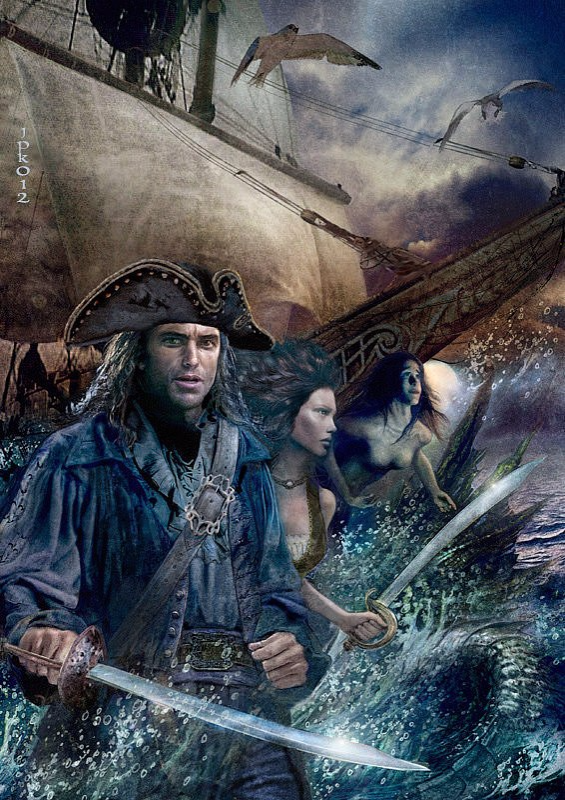
Главная
Навигация
Галерея ГГ
Локации
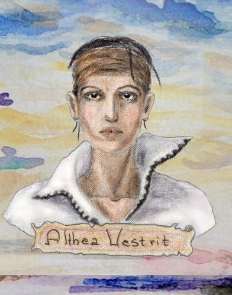
Альтия Вестрит .
Любимая дочь Ефрона Вестрита .Не представляет свою жизнь без моря и готова на все , что бы доказать ,что доcтойна быть капитаном.
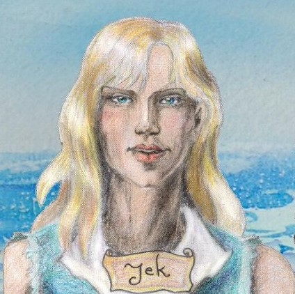
Йек.Подруга Янтарь.
Загадочная спутница Янтарь , родом из Шести Герцогств.
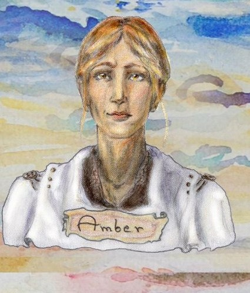
Янтарь.Резчица по дереву.
Помогала в востановлении Совершенного
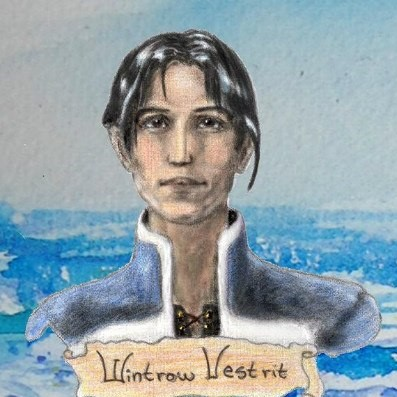
Уинтроу.Сын Кайла Хэвена.
Совсем не похож на отца .Готовился стать жрецом Са.
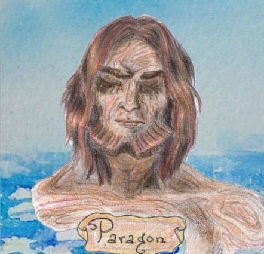
Совершенный.Корабль.
"Безумный" корабль семейства Ладлаков .
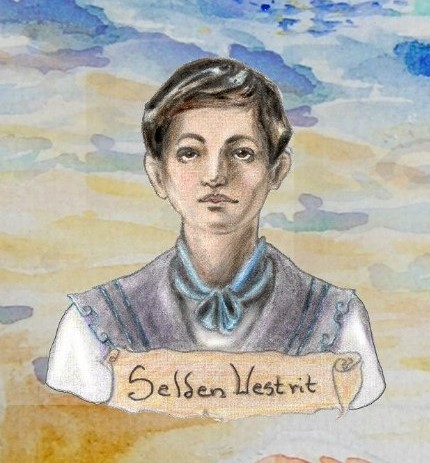
Сельден.Младший брат Альтиии.
Младший сын Кефрии Вестрит и Кайла Хэвена.
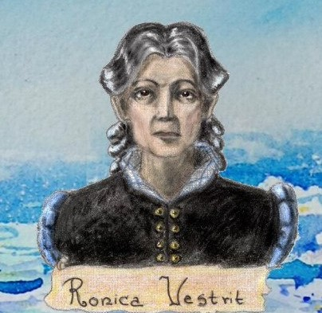
Роника Вестрит.
Жена (вдова)Ефрона Вестрита ,на которую он всецело полагался.Сильная и волевая женщина.
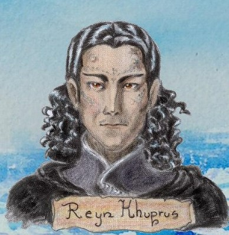
Рейн Хупрус.
Жених Малты , родом из Дождевых Чащоб.
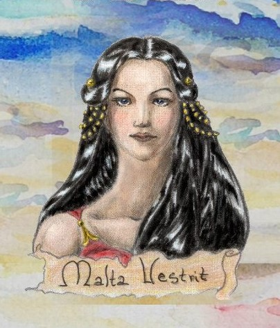
Малта Хевен.
Дочь Кайла Хэвена . В течении книги характер сильно меняется под влиянием обстоятельств.
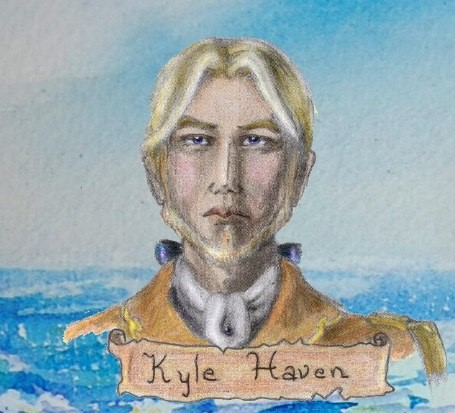
Кайл Хэвен.
Лицемерная сволочь.Муж Кефрии , родом из Калсиды.
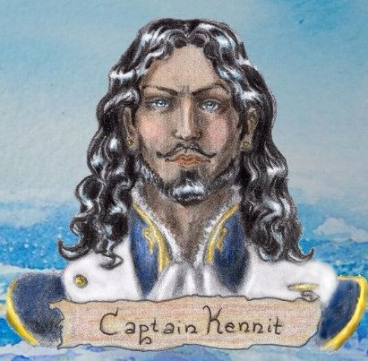
Капитан Кеннит.
Пиратский капитан,мечтающий создать собственное королевство.
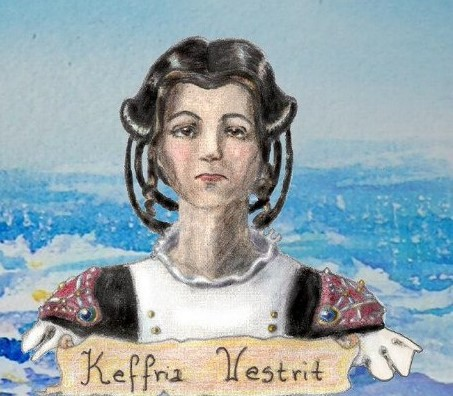
Кефрия Хэвен.
Дочь Уфрона Вестрита . В отличии от младшей сестры Альтии ,примерная дочь ,жена и мать.
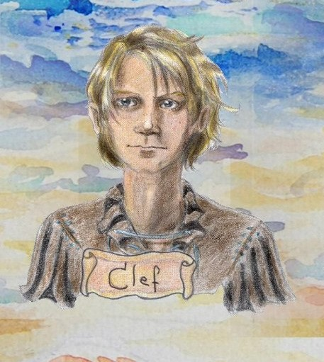
Клеф.Юнга с Проказницы.
В будущем хороший матрос.
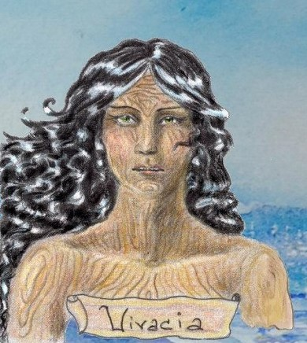
Проказница .Живой корабль.
Живой корабль семейства Вестритов .Ожила с сложное для семьи время.
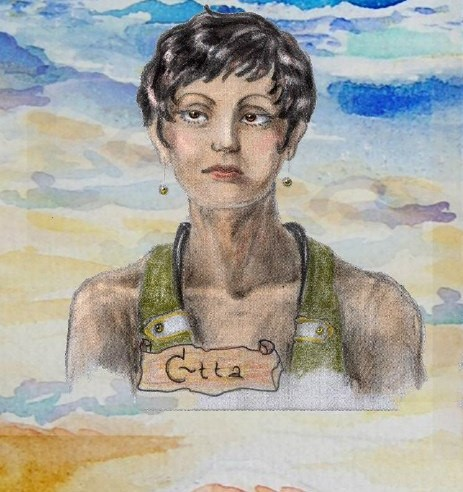
Этта.Любовница Кеннита.
Предана Кенниту.Жестока.
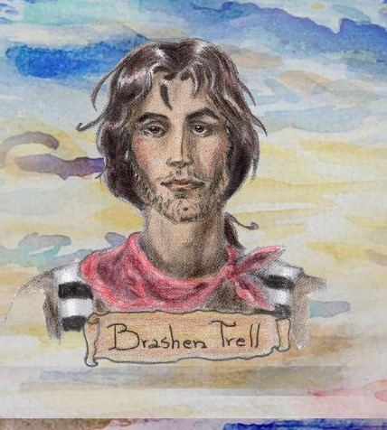
Брэшн Трелл
Человек сложной судьбы. Друг Альтии Вестрит.
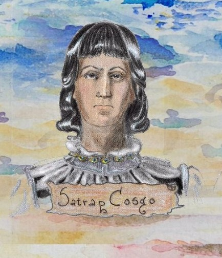
Сапрап Касго.
Правитель Джамелии.Слабовольный и изнеженный .